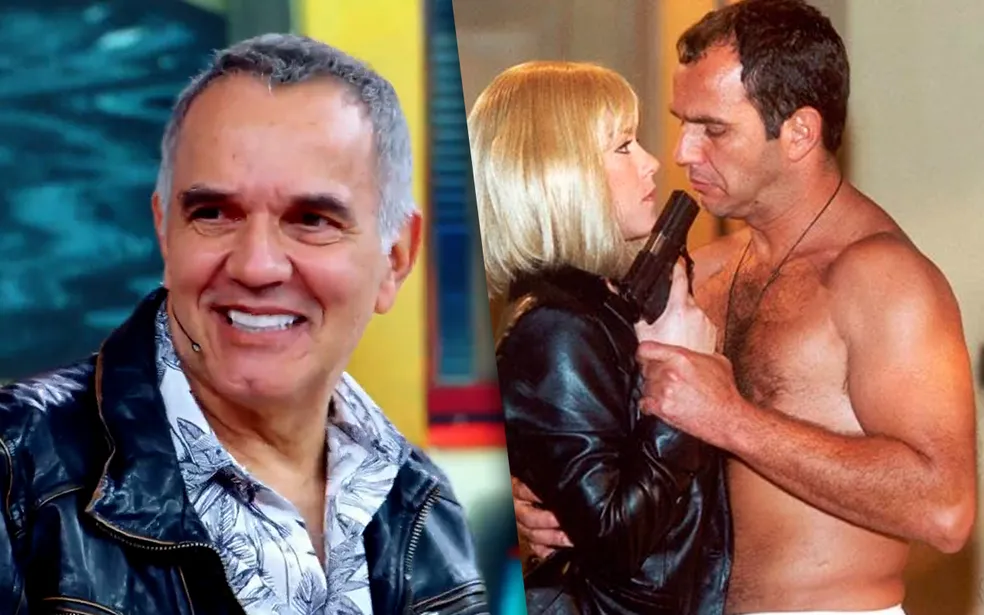

Anitta relembra desentendimento com Marina Ruy Barbosa
e admite: 'Fiz umas cagadas, depois pedi perdão'

Terra e Paixão: Luigi é feito de refém por assassino de Nice

Por que irmãos veem a mãe diferente se ela tem o mesmo signo?

Humberto Martins lembra perrengue na época de galã descamisado nas novelas: 'Tive síndrome do pânico'
Home